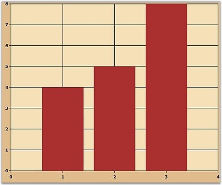
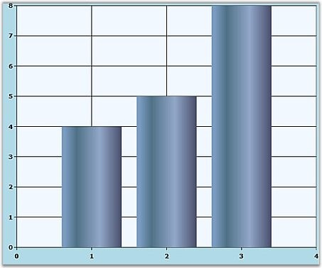

To change the default series color, and assign a new color to the series, you can use Foreground property. You can also give gradient appearance to the series points. The foreground of the series can be a solid color brush or Gradient Brush colors.
The following code can be used to set a solid color brush as foreground for the series.
|
[XAML]
<syncfusion:Chart> <syncfusion:ChartArea Background="BurlyWood" GridBackground="Wheat"> <syncfusion:ChartSeries Data="1,4,2,5,3,8" Interior="Brown"/> </syncfusion:ChartArea> </syncfusion:Chart> |
|
[C#]
series1. Interior = new SolidColorBrush (Colors.Brown); |
Run the code. The following output is displayed.

Figure 63: Series Foreground = "Brown"
The following code can be used to set gradient brush colors for the series foreground.
|
[XAML]
<UserControl.Resources>
<LinearGradientBrush x:Key="Series1" EndPoint="0,0.5" StartPoint="1,0.5" > <GradientStop Color="#FF434865" Offset="0"/> <GradientStop Color="#FF7598BF" Offset="0.947"/> <GradientStop Color="#FF496B82" Offset="0.75"/> <GradientStop Color="#FF8DA4C7" Offset="0.365"/> </LinearGradientBrush> </UserControl.Resources>
<syncfusion:Chart> <syncfusion:ChartArea Background="LightBlue" GridBackground="AliceBlue"> <syncfusion:ChartSeries Data="1,4,2,5,3,8" Foreground="{StaticResource Series1}"/> </syncfusion:ChartArea> </syncfusion:Chart> |

Figure 64: Series Foreground set to Gradient Brushes